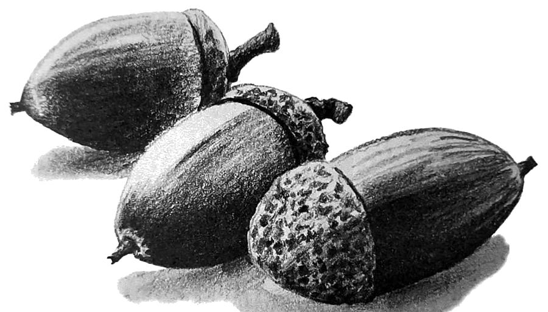

Caminar por caminar
Andar sin meta, sin marcador y sin prisa. Al soltar el «para qué», el paseo se basta a sí mismo y aparece el tiempo para mirar, pensar y estar.
Sábado 7 de noviembre · La Pradera de Navalhorno
Una mañana de otoño para caminar sin prisa por el bosque y conversar después en torno a un libro que celebra el arte de andar. Descubriremos juntos que andar por andar es un gesto con profundidad y con enseñanza. Basta con venir con ganas de caminar despacio.

Andar sin meta, sin marcador y sin prisa. Al soltar el «para qué», el paseo se basta a sí mismo y aparece el tiempo para mirar, pensar y estar.
Un paso, otro, y el cuerpo encuentra su ritmo, como la respiración o el latido. A pie, el mundo recupera su tamaño humano: lento, cercano y lleno de detalle.
Detenerse ante una corteza, una bellota o el rumor de las ramas. En el silencio la atención se afina y lo pequeño revela su profundidad.
Entre las huellas más antiguas de nuestros antepasados, en Laetoli (Tanzania), hay varias personas caminando juntas. Acompasar el paso con otros es una de las formas más antiguas de compañía.
Horario orientativo. El bosque marca el ritmo.
Nos encontramos en la C/ Segunda, 14, y dejamos las prisas en la puerta.
Caminata lenta con tramos de silencio y pequeños gestos de atención: el paso, la mirada, la escucha.
En torno al libro «Andar por andar», con la escucha de fragmentos del programa de Radio 3 dedicado a él.
Cada asistente comparte lo que se lleva del camino.
El programa de Radio 3 dedicado a «Andar por andar», completo, para quien quiera disfrutarlo con más calma antes o después de la experiencia.